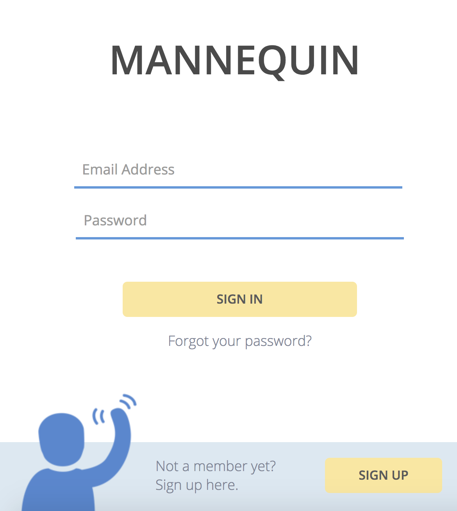
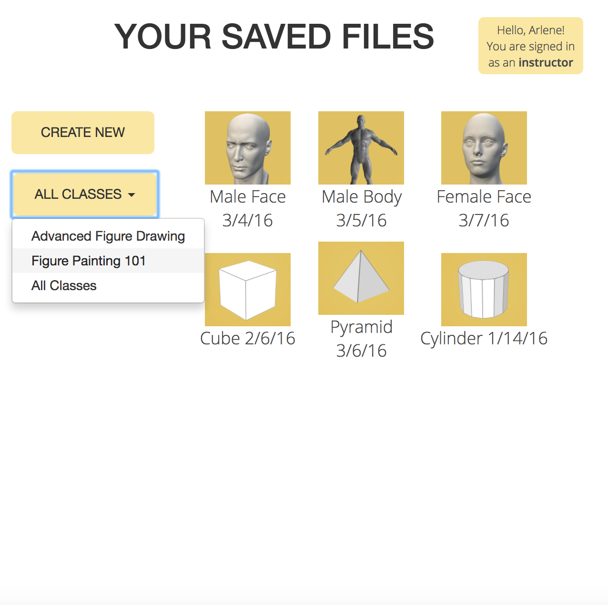
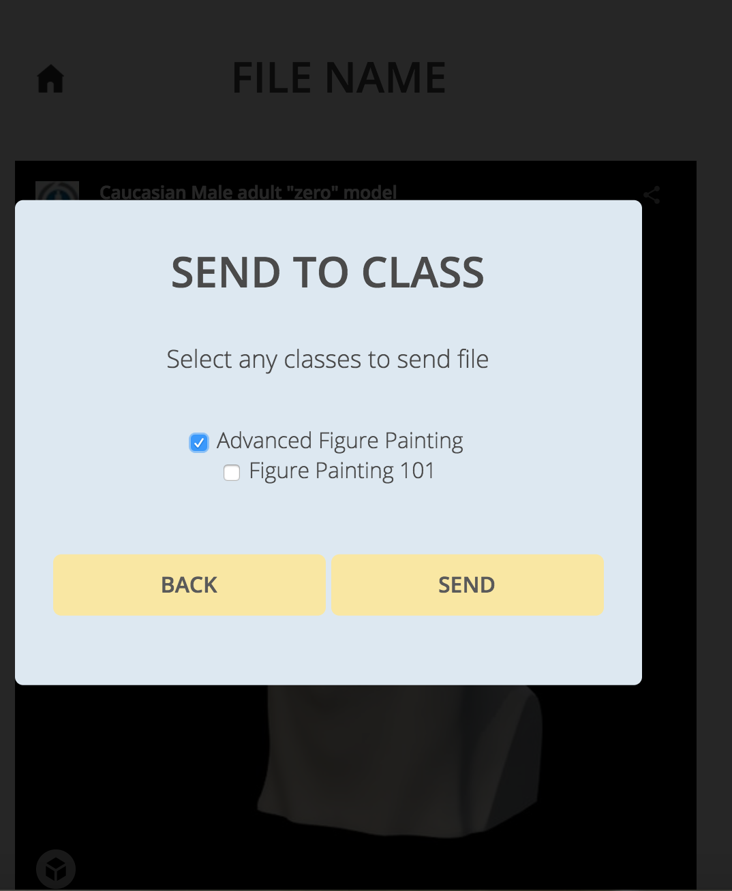

info
projects
coding projects
graphic design
ux design
studio art
mannequin is a resource for artists and art educators that allows them to access customizable virtual models. for art educators, mannequin gives options of saving the virtual poses and sharing them with a classroom, where students can all work from a given model at the same time. this project was motivated by the challenge that artists and art educators have with affording in-person models and with having drawing references in limited space. with mannequin, one can create an account, and keep a library of virtual poses of different human figures or geometric shapes that can edited and used as drawing reference. it is much more simple and accessible for artists to use mannequin to click and drag a figure into the desired pose and use it as reference than it is for them to hire a model or even to search online for the reference image they need.
the welcome screen of mannequin:
a view of an educator's library:
sending a pose to the correct classroom:
during this project, my team and I conducted interviews on the original concept with art educators and artists, and eventually built the interface using jQuery and basic HTML/CSS.
from scratch, with my bare hands, etc, etc,